整理来源：绿巨能官方知识库 study.llanoljn.com | 整理人：韩立 | 最后更新：2026-08-14
点击卡片可跳转到对应型号详情页。每个型号的外观特征、颜色、接口类型均有明显差异，方便你根据实物快速辨认。
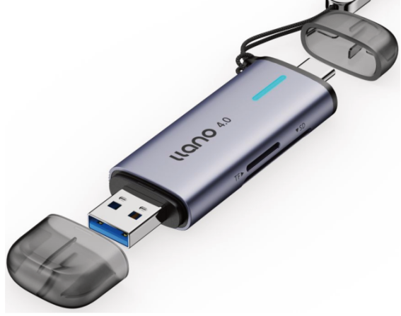
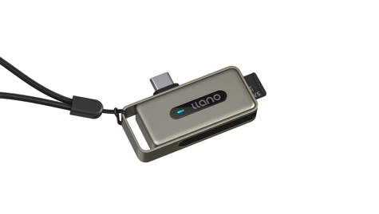
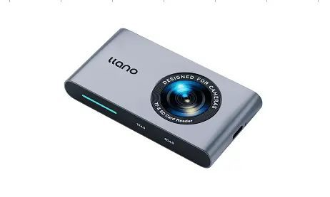
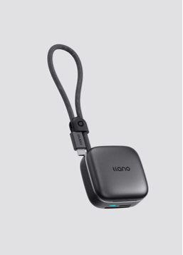
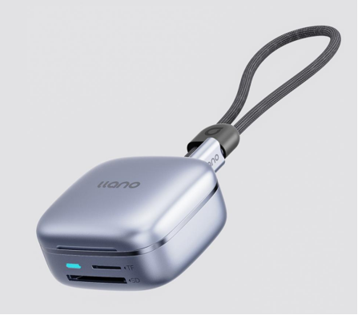
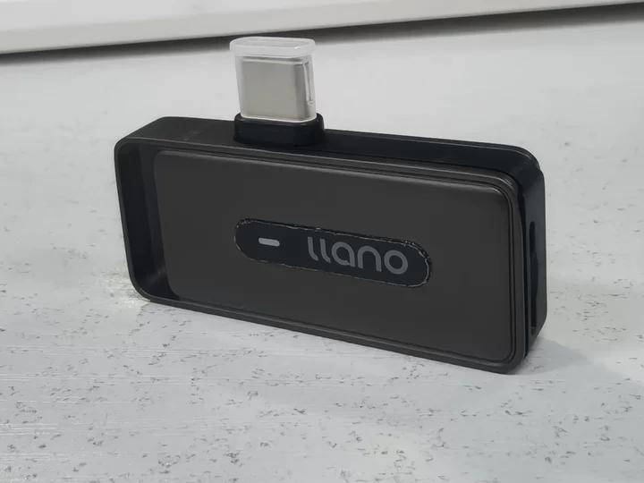
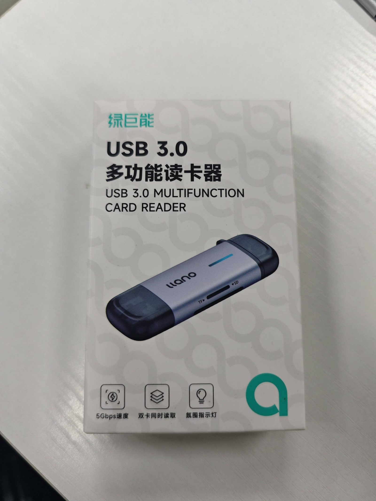
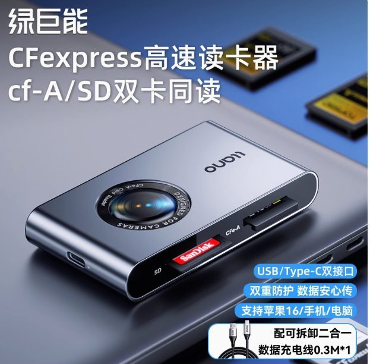
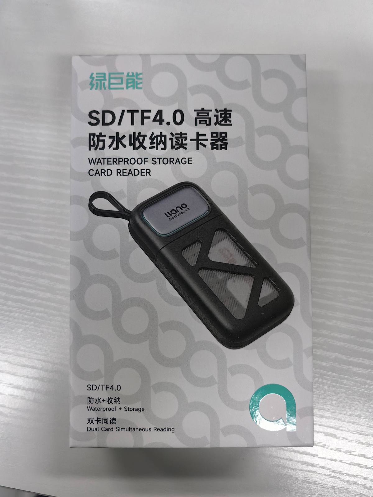
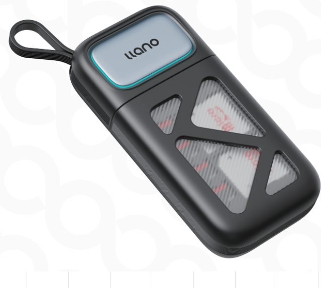
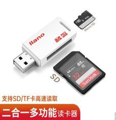
| 型号 | 外观特征 | 接口 | 支持卡类型 | 理论速度 | 特殊功能 |
|---|---|---|---|---|---|
| F66 | 银灰色长条，双头透明盖，挂绳 | USB-A + Type-C | SD + TF（4.0/3.0/2.0） | 312 MB/s | 铝合金外壳，蓝灯指示 |
| F19 | 香槟金小型，Type-C口，挂绳 | Type-C | TF（3.0） | 170 MB/s | 内置32GB存储，双盘符 |
| G8001 | 银色大矩形，正面镜头图案 | USB-A + Type-C | SD + TF + MS（三盘符） | 312 MB/s | 相机专用，橡胶边条 |
| F18 | 黑色立方体，底部灯+卡槽标识 | USB-C（配USB-A转接头） | SD + TF（3.0） | 170 MB/s | 收纳2SD+4TF，编织线 |
| F17 | 银色立方体，底部灯+卡槽标识 | USB-C（配USB-A转接头） | SD + TF（4.0） | 312 MB/s | 收纳2SD+4TF，编织线 |
| F20 | 深空灰小型，Type-C口，挂绳 | Type-C | TF（4.0） | 312 MB/s | 内置32GB存储，双盘符 |
| LCR1003B | 蓝银长条，带呼吸灯 | USB-A + Type-C | SD + TF | 104 MB/s | RGB呼吸灯，带灯版 |
| LCR2003B | 蓝银长条，无灯 | USB-A + Type-C | SD + TF | 104 MB/s | 无灯版，同尺寸 |
| R501 | 银色，带CF-A+SD卡槽 | USB-C（配USB-A转接头） | CFe-A + SD（4.0） | CFe-A 900MB/s / SD 312MB/s | 专业相机高速，USB3.1 Gen2 |
| R404 | 黑色椭圆，防水硅胶套，登山扣 | USB-C（配USB-A转接头） | SD + TF（4.0） | 312 MB/s | 防水+收纳，8TF+4SD |
| R402 | 黑色椭圆，防水硅胶套，登山扣 | USB-C（配USB-A转接头） | SD + TF（3.0） | 104 MB/s | 防水+收纳，呼吸灯 |
| LJN-CA1007 | 白色小型USB-A | USB-A 2.0 | SD + TF | 480 Mbps | 单盘符，塑料 |
| LJN-CC1033 | 皮纹USB-A | USB-A 2.0 | SD + TF | 480 Mbps | 单盘符，皮纹 |
| LJN-CC1032 | 皮纹USB-A | USB-A 3.0 | SD + TF | 5 Gbps | 双盘符，皮纹 |
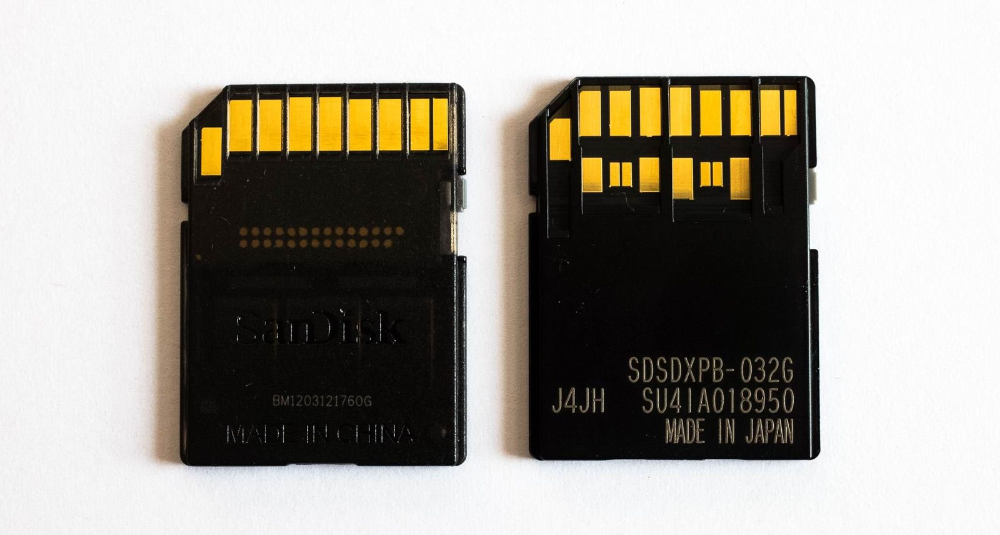
| SKU | 6933064655425 |
|---|---|
| 产品名称 | F66 USB/Type-C 高速4.0读卡器 |
| 型号 | F66 |
| 材质 | 铝合金 + ABS |
| 产品尺寸 | 85 × 27 × 11 mm |
| 接口类型 | USB-A + Type-C（双接口） |
| 接口传输速度 | 5 Gbps（USB 3.0） |
| 盘符 | 双盘符（SD + TF 同时读取） |
| 支持存储卡 | SD / TF 4.0 / 3.0 / 2.0（兼容 UHS-I / UHS-II） |
| 最大支持容量 | 2 TB（单卡） |
| 系统支持 | Mac OS / Windows / Android / Linux（安卓需支持 OTG） |
| 指示灯 | 插入设备：冰蓝灯长亮；插入存储卡：蓝灯闪烁 |
| 配件 | 读卡器 ×1、锌合金挂绳 ×1、说明书 ×1 |
操作说明：数据输入端为 USB-A / Type-C，支持 USB 3.0 5Gbps 传输速率，向下兼容 USB 2.0/1.0。不支持音频传输。
数据输出端：SD/TF 4.0 内存卡，读 180~312 MB/s，写 150~250 MB/s，支持 SD/TF 同时读写。
LED 指示灯：插上手机不插卡 → 冰蓝灯长亮；读写卡（插卡时）→ 闪烁两下后转冰蓝灯长亮；不读卡 → 冰蓝灯闪烁。
| SKU | 6933064653872 |
|---|---|
| 产品名称 | F19 存储读卡器 3.0 |
| 型号 | F19 |
| 材质 | 锌合金 + ABS |
| 净重 | 约 25.8 g |
| 毛重 | 约 41.7 g |
| 产品尺寸 | 约 5 × 3 × 0.9 cm |
| 接口类型 | Type-C |
| 接口传输速度 | 5 Gbps |
| 盘符 | 双盘符（内置 32GB 存储 + 外接 TF 卡） |
| 支持存储卡 | TF（兼容 UHS-I / UHS-II） |
| 最大支持容量 | 2 TB（外接 TF） |
| 颜色 | 香槟金 |
| 系统支持 | Mac OS / Windows / Android / Linux（安卓需 OTG） |
| 配件 | 读卡器 ×1、说明书 ×1 |
仅支持 TF 卡。F19 卡槽支持读取 3.0（UHS-I）TF 卡。即插即用，无需驱动。
| SKU | 6933064655357 |
|---|---|
| 产品名称 | 4.0 读卡器（Designed for Cameras） |
| 型号 | G8001 |
| 材质 | 铝合金 |
| 产品尺寸 | 90.3 × 49.3 × 9.2 mm |
| 净重 | 约 55.7 g |
| 接口类型 | USB-A + Type-C（双接口） |
| 接口传输速度 | 5 Gbps |
| 盘符 | 三盘符（SD + TF + MS） |
| 支持存储卡 | SD / TF / MS（Memory Stick） |
| 最大支持容量 | 2 TB |
| 系统支持 | Mac OS / Windows / Android / Linux |
| 配件 | 读卡器 ×1、锌合金挂绳 ×1、说明书 ×1 |
即插即用，支持 SD、TF、MS 三种卡同时读取。三盘符显示。
| SKU | 6933064653780 |
|---|---|
| 产品名称 | Pocket 闪传卡盒 3.0 |
| 型号 | F18 |
| 材质 | ABS + 硅胶 |
| 产品尺寸 | 52.94 × 53.11 × 30 mm（线长 180 mm） |
| 净重 | 约 59 g |
| 接口类型 | USB-C（配 USB-A 转接头） |
| 接口传输速度 | 5 Gbps |
| 盘符 | 双盘符（SD + TF） |
| 支持存储卡 | TF / SD（3.0，兼容 UHS-I / UHS-II） |
| 收纳能力 | 可同时收纳 2 张 SD 卡 + 4 张 Micro SD 卡 |
| 颜色 | 深空灰 |
| 系统支持 | Mac OS / Windows / Android / Linux |
| 配件 | 读卡器 ×1、USB 3.0 转接头 ×1、说明书 ×1 |
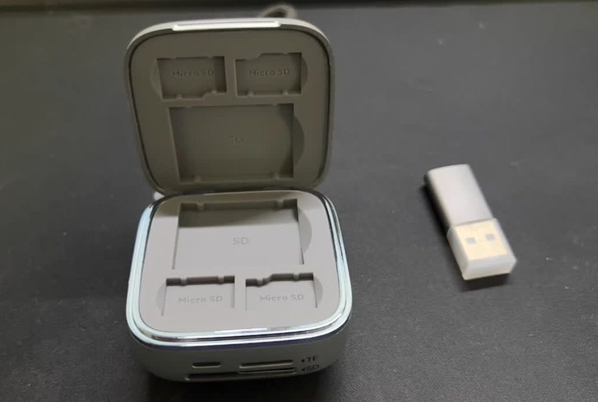
| SKU | 6933064653773 |
|---|---|
| 产品名称 | Pocket 闪传卡盒 4.0 |
| 型号 | F17 |
| 材质 | ABS + 硅胶 |
| 产品尺寸 | 52.94 × 53.11 × 30 mm（线长 180 mm） |
| 净重 | 约 60 g |
| 接口类型 | USB-C（配 USB-A 转接头） |
| 接口传输速度 | 5 Gbps |
| 盘符 | 双盘符（SD + TF） |
| 支持存储卡 | TF / SD（4.0，兼容 UHS-I / UHS-II） |
| 收纳能力 | 可同时收纳 2 张 SD 卡 + 4 张 Micro SD 卡 |
| 颜色 | 银色 |
| 系统支持 | Mac OS / Windows / Android / Linux |
| 配件 | 读卡器 ×1、USB 3.0 转接头 ×1、说明书 ×1 |
同 F18。TF 卡 logo 面朝下按压，SD 卡 logo 面朝上插入。USB 转接头可收纳在线的 C 口上。
| SKU | 6933064653889 |
|---|---|
| 产品名称 | F20 存储读卡器 4.0 |
| 型号 | F20 |
| 材质 | 锌合金 + ABS |
| 净重 | 约 25.8 g |
| 毛重 | 约 41.6 g |
| 产品尺寸 | 约 5 × 3 × 0.9 cm |
| 接口类型 | Type-C |
| 接口传输速度 | 5 Gbps |
| 盘符 | 双盘符（内置 32GB 存储 + 外接 TF 卡） |
| 支持存储卡 | TF（4.0，兼容 UHS-I / UHS-II） |
| 最大支持容量 | 2 TB（外接 TF） |
| 颜色 | 深空灰 |
| 系统支持 | Mac OS / Windows / Android / Linux（安卓需 OTG） |
| 配件 | 读卡器 ×1、说明书 ×1 |
仅支持 TF 卡。F20 卡槽支持读取 4.0（UHS-II）TF 卡。即插即用。
| LCR1003B（带灯版） | LCR2003B（无灯版） | |
|---|---|---|
| SKU | 6933064615641 | 6933064616600 |
| 产品名称 | USB 3.0 多功能读卡器（双盘符） | USB 3.0 读卡器（双头） |
| 型号 | LCR1003B | LCR2003B |
| 材质 | 铝壳 | 铝壳 |
| 重量 | 约 17.1 g | 约 28 g |
| 产品尺寸 | 7.3 × 2.3 × 1 cm（长度含 USB 接头套壳） | |
| 接口类型 | USB-A + Type-C（双头） | |
| 接口传输速度 | 5 Gbps | |
| 盘符 | 双盘符（SD + TF） | |
| 支持存储卡 | SD / TF（不支持 WiFi SD 卡） | |
| 区别 | 带 RGB 呼吸灯（不读卡时慢闪，读卡时蓝灯闪烁） | 不带灯 |
SD 和 TF 卡可用。不支持 WiFi SD 卡。即插即用。
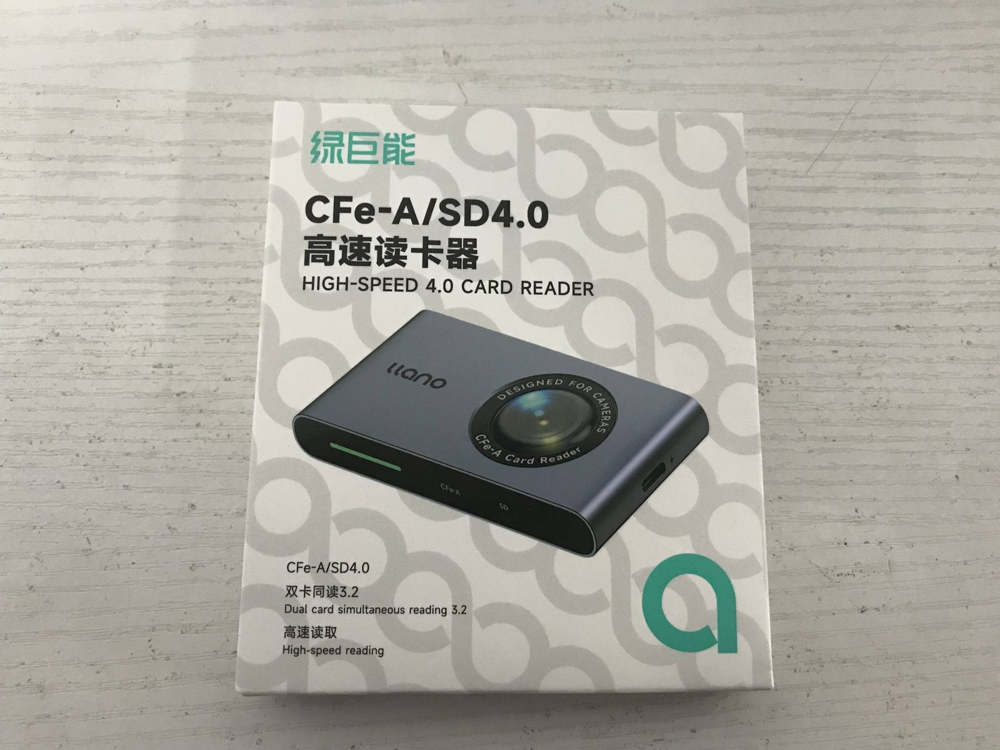
| SKU | 6933064628023 |
|---|---|
| 产品名称 | CFe-A + SD4.0 双卡高速读卡器 |
| 型号 | R501 |
| 材质 | 铝合金外壳 |
| 产品尺寸 | 7.85 × 5.1 × 1.33 cm |
| 外包装尺寸 | 98 × 116 × 20 mm |
| 净重 | 约 108 g |
| 毛重 | 含包装约 115.1 g |
| 接口类型 | USB-C（配 USB-A 转接头） |
| 接口规范 | USB 3.1 Gen 2 |
| 接口理论速度 | 10 Gbps |
| 盘符 | 双盘符（CFe-A + SD） |
| 支持存储卡 | CFexpress Type-A / SD 4.0（UHS-II）/ 向下兼容 SD 3.0（UHS-I） |
| 传输速度 | CFe-A 卡理论 900 MB/s；SD 4.0 理论 312 MB/s |
| 配件 | 说明书、防伪标、彩盒、USB/Type-C 二合一供电线、吸塑、CPE 袋 |
仅支持 CF-A 内存卡（不支持 CF-C 或 CF-B）。SD 卡支持 UHS-II（双排金手指）。即插即用。
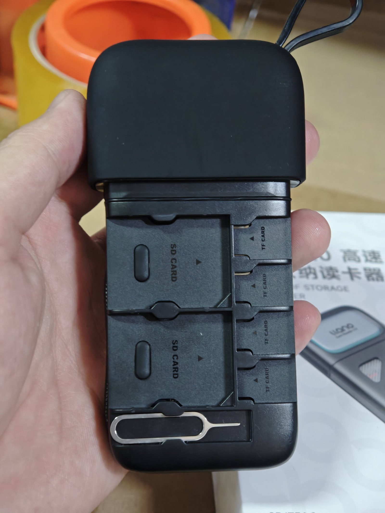
| 69码 | 6933064627149 |
|---|---|
| 产品名称 | SD/TF 4.0 防水收纳读卡器 |
| 型号 | R404 |
| 材质 | ABS + 硅胶 |
| 尺寸 | 15 × 5.5 × 2 cm |
| 净重 | 约 108.3 g |
| 带包装重量 | 约 225 g |
| 包装尺寸 | 15 × 9.5 × 4.2 cm |
| 接口类型 | USB-C（配 USB-A 转接头） |
| 接口传输速度 | 5 Gbps |
| 盘符 | 双盘符（SD + TF） |
| 支持存储卡 | SD / TF 4.0（UHS-II），向下兼容 3.0/2.0 |
| 理论速度 | 312 MB/s（读/写） |
| 配件 | 读卡器、防水硅胶套、锌合金登山扣、C 转 A 转接头、说明书、包装、卡针 |
| 产品名称 | 3.0 防水收纳读卡器 |
|---|---|
| 型号 | R402 |
| 材质 | ABS + 硅胶 |
| 重量 | 约 225 g |
| 尺寸 | 15 × 5.5 × 2 cm |
| 接口类型 | USB-C（配 USB-A 转接头） |
| 接口规范 | USB 3.0 |
| 接口传输速度 | 5 Gbps |
| 盘符 | 双盘符（SD + TF） |
| 支持存储卡 | SD / TF 3.0（UHS-I），兼容 SD/TF 4.0（UHS-II） |
| 理论速度 | 104 MB/s（UHS-I 标准） |
| 配件 | 读卡器、防水硅胶套、锌合金登山扣、C 转 A 转接头、说明书、包装、卡针 |
TF 卡 logo 面朝下插入，SD 卡 logo 面朝上插入。读取到卡亮绿灯，未插卡蓝灯。
| 型号 | 产品名称 | 材质 | 尺寸 | 接口 | 速度 | 盘符 | 支持卡 |
|---|---|---|---|---|---|---|---|
| LJN-CA1007 | 2.0 USB 单头二合一读卡器 | 塑料 ABS | 53.6 × 21.7 × 8.7 mm | USB-A 2.0 | 480 Mbps | 单盘符 | SD / TF |
| LJN-CC1033 | 2.0 USB 单头二合一读卡器 | 塑胶 ABS + 皮纹 | 66.7 × 22 × 10 mm | USB-A 2.0 | 480 Mbps | 单盘符 | SD / TF |
| LJN-CC1032 | 3.0 USB 单头二合一读卡器 | 塑料 ABS + 皮纹 | 66.7 × 22 × 10 mm | USB-A 3.0 | 5 Gbps | 双盘符 | SD / TF |
卖点：体积小巧携带方便，双卡同时读取（CC1032），内置 FLASH 芯片过流短路保护，皮质吊绳防丢失。
UHS-I：卡背面单排金手指，理论速度约 104 MB/s。
UHS-II：卡背面双排金手指，理论速度可达 312 MB/s（需搭配 4.0 读卡器）。
只有读卡器和内存卡都支持 UHS-II，且电脑接口为 USB 3.2 Gen1/Gen2 或雷电接口，才能达到最高速度。缺一不可。
实际速度受三个因素限制：① 内存卡标准（UHS-I 或 UHS-II）② 电脑/手机接口（USB 2.0 / 3.0 / 3.2 / 雷电）③ 文件大小和系统缓存。
传输开始时速度较快（系统缓存加速），随着数据量增加缓存填满，速度可能下降，属正常现象。
若速度只有 20~100 MB/s，可能是内存卡为 UHS-I 或接口为 USB 2.0。
新买的内存卡未初始化，需在电脑上初始化。操作：键盘按 Win + X → 选择"磁盘管理" → 插入新卡会弹出初始化窗口 → 选择 exFAT 或 FAT32 格式。
注意：尽量选择 exFAT 或 FAT32 格式，基本上所有设备都可识别。RAW 格式需修复或重新格式化。
若插入后显示"此驱动器存在问题，请立即扫描此驱动器并修复"，通常不是驱动错误。尝试：
1. 不插卡插入设备，看是否还弹提示；2. 若仍弹提示，大概率是内存卡本身问题；3. 点击扫描或直接关闭提示即可，不影响正常使用。
双盘符设计的产品（如 F66、F18、F17、R404、R402 等）支持同时读取两张内存卡。插入后显示两个磁盘分区是正常功能，无需担心。
| 产品 | 未插卡/待机 | 识别成功 | 读写中 |
|---|---|---|---|
| F66 / G8001 | 冰蓝灯长亮 | 冰蓝灯长亮 | 蓝灯闪烁 |
| F18 / F17 | 冰蓝灯常亮 | 冰蓝灯常亮 | 冰蓝灯闪烁 |
| F19（内置卡） | 蓝灯闪烁 | 蓝灯长亮 | 蓝灯闪烁 |
| F19（外置卡） | 翠绿色灯闪烁 | 翠绿色长亮 | 翠绿色灯闪烁 |
| F20（同 F19） | 内置蓝/外置翠绿 | 内置蓝/外置翠绿 | 交替闪烁 |
| R404 / R402 | 蓝灯 | — | 绿灯 |
| LCR1003B | RGB 慢闪 | RGB 慢闪 | 蓝灯闪烁 |